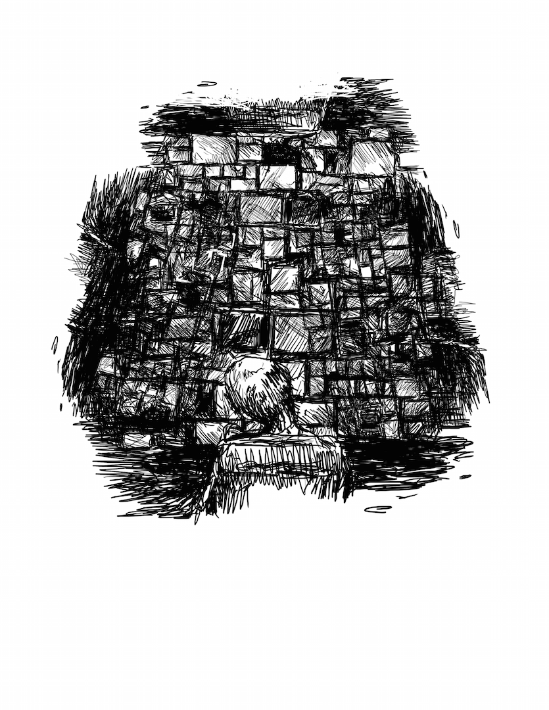

THE EXILE
THE EXILETHE EXILETHE EXILETHE EXILETHEEX ILETHEEXILE THE EXILE THE EXILETHE EX ILETHE EXILETHE EXILE THE EXILE THE EXILE THE EXILE THE EXILE THEEXI LETHE EXILE THE EXILETHEEX ILETHEEXILE THE EXILE THE EXILE THEEXI LETHE EXILE THE EXILETHEEX ILETHEEXILE THE EXILE
THE EXILETHE EXILETHE EXILETHE EXILETHEEX ILETHEEXILE THE EXILE THE EXILETHE EX ILETHE EXILETHE EXILE THE EXILE THE EXILE THE EXILE THE EXILE THEEXI LETHE EXILE THE EXILETHEEX ILETHEEXILE THE EXILE THE EXILE THEEXI LETHE EXILE THE EXILETHEEX ILETHEEXILE THE EXILE
THE EXILETHE EXILETHE EXILETHE EXILETHEEX ILETHEEXILE THE EXILE THE EXILETHE EX ILETHE EXILETHE EXILE THE EXILE THE EXILE THE EXILE THE EXILE THEEXI LETHE EXILE THE EXILETHEEX ILETHEEXILE THE EXILE THE EXILE THEEXI LETHE EXILE THE EXILETHEEX ILETHEEXILE THE EXILE
THE EXILETHE EXILETHE EXILETHE EXILETHEEX ILETHEEXILE THE EXILE THE EXILETHE EX ILETHE EXILETHE EXILE THE EXILE THE EXILE THE EXILE THE EXILE THEEXI LETHE EXILE THE EXILETHEEX ILETHEEXILE THE EXILE THE EXILE THEEXI LETHE EXILE THE EXILETHEEX ILETHEEXILE THE EXILE
THE EXILETHE EXILETHE EXILETHE EXILETHEEX ILETHEEXILE THE EXILE THE EXILETHE EX ILETHE EXILETHE EXILE THE EXILE THE EXILE THE EXILE THE EXILE THEEXI LETHE EXILE THE EXILETHEEX ILETHEEXILE THE EXILE THE EXILE THEEXI LETHE EXILE THE EXILETHEEX ILETHEEXILE THE EXILE
“Amor, amor, hasta la noche abrupta,
desde el sonoro pedernal andino,
hacia la aurora de rodillas rojas,
contempla el hijo ciego de la nieve.”
- Pablo Neruda,
Alturas de Macchu Picchu, VIII
Brochure of Machu Picchu:
brown children with Andean smiles,
blue flowers under a famished sky -
Meditation, adventure, and Incan ruins!
All the handprints of the moon: margaritas and stars,
canteens to catch the rain fall –
more time to relax and recharge
your marginal utility.
Guides speak English, Chinese, German,
and don’t forget Spanish!
Meet cosmic Latina women,
made famous by Neruda.
My mother read out your poetry, under the canopy of maple leaves as I wondered on the wonders made by my brown ancestors thousands of kilometers and years removed from the ruined brick under my pale feet. Your verses remind her, and those like her, of Santiago – exiles.
She was a child when her English
teacher was taken by soldiers with
heavy arms off in the night.
She held her youngest brother as
he cried at the sight of leviathans
flying-overhead,
sirens in full aria.
A few weeks passed before
bullets broke skulls into fragments
of wet topaz on the steps of
parliament,
and the military burned your books
because they were about love.
You died just days later – heartbroken –
comfortably asleep in morphine.
In the Atacama, guanacos bite
off cactus flowers, and
pre-Columbian carvings of
stories and faces on stones
lay along prehistoric roads,
where a death camp was built –
fresh bodies buried beside
mummified remains –
a field of bent black crosses,
enough to make nuns atheist.
Mothers still search for the bones
of their children, executed and
forgotten on the sand decades
past.
But they still go on, every week,
in the Atacama – the driest heat –
the thinness atmosphere of this
earth.
They walk like vultures to
scavenge the scraps from the
mud.
The dust sparkles under the clear starlight as missing photographs mold.
Does that endurance come from hope or despair?
This is true love, one absent
from all your sweet poems.